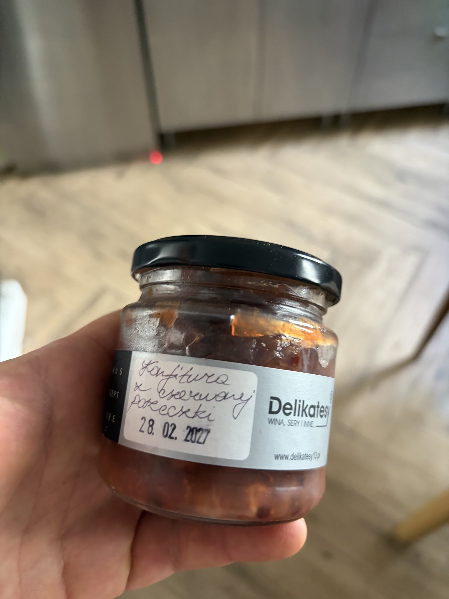

Sea Urchin Roe
Galician sea urchin gonads — multiple brands: La Brújula Nº91, Ramón Peña 1920, Rosa Lafuente, Los Peperetes, Porto-Muiños.
What It Is
Galician sea urchin (Paracentrotus lividus) gonads, harvested from the Rías Baixas and the Cantabrian coast, preserved in brine or their own juices. This is among the most fragile of all conservas — the product degrades measurably within months, and top lots are often seasonal. The listed brands represent tiers of quality:
- La Brújula Nº91: Small-batch, artisan presentation. Hand-selected urchins, minimal salt, short pasteurization.
- Ramón Peña 1920: Premium line from the iconic Galician cannery. Consistent, clean, slightly firmer texture due to precise thermal processing.
- Rosa Lafuente: Traditional house, often brighter in color and more assertively briny.
- Los Peperetes: Artisan producer from Ribeira; known for minimal intervention and excellent raw-material sourcing.
- Porto-Muiños (with seaweed): Modern Galician house. Their urchin with seaweed (con algas) adds vegetal depth and a slightly more complex savory matrix.
Quality markers across all brands: bright yellow-gold to orange color (never gray or brown), intact lobes with minimal breakage, liquor that smells like clean ocean and nori — never ammonia, never sulfur.
Nutritional Profile
Per 100g (drained):
- Calories: ~120–150 kcal
- Protein: 3–4g
- Fat: 5–7g (high in omega-3s and phospholipids; unique among seafood for its fat profile)
- Carbohydrates: ~8–12g (unusual for seafood — sea urchin contains significant glycogen, giving it a sweet note)
- Vitamin A, iodine, zinc: present
- Sodium: highly variable; 300–700mg depending on packing medium
Preparation & Service
Critical: Sea urchin conserva is best consumed within 12–18 months of production. Check dates. Serve very cold — 4–6°C/39–43°F — but not frozen. Open just before service; oxidizes rapidly. Drain carefully through a fine sieve, reserving the liquor. The liquor is clean, deeply savory, and can be used in a sauce or simply spooned over the roe. Do not rinse. Do not heat. Heat destroys the volatile aromatic compounds that define the eating experience and turns the texture to rubber.
Porto-Muiños' seaweed-enhanced version benefits from being served with a visible piece of the packing seaweed as a garnish — it telegraphs the flavor story.
Traditional & Modern Eating Context
In Galicia, fresh urchin is eaten raw from the shell with bread. In conserva form, it's a luxury tapa, often simply spooned onto toast. For VIP service, think composition, not cooking: roe as the focal point of a raw-style plate. Consider a "tartare" framework where the urchin sits atop diced scallop or hamachi, or as a rich garnish on a clear shellfish consommé served at precise temperature.
Flavor & Texture
The texture is the defining feature: custardy, yielding, with a slight resistance at the lobe's edge. It collapses on the tongue into a creamy, almost fatty film. The flavor is profoundly maritime — nori, fresh oyster liquor, and a distinct sweet-savory note from the glycogen that reads as almost egg-custard-like. There is a faint metallic tang, a whisper of iodine, and a finish of clean ocean breeze. Porto-Muiños' version adds a deeper umami bass note from the seaweed, making it slightly more savory and less overtly sweet.
Pairings & Composition
- Wines: Brut nature Cava, aged Albariño (Lees-contact), Chablis Premier Cru
- Bases: Lardo di colonnata (thinly shaved), warm steamed rice, scrambled eggs at low temperature, raw scallop
- Vegetables: Cucumber brunoise, celery root remoulade, pickled fennel
- Dish idea: Erizo, vieira y algas — a ring of sea urchin roe around a raw diver scallop, dressed with the packing liquor, a few drops of yuzu, and a frond of the packing seaweed. No more than five elements on the plate.